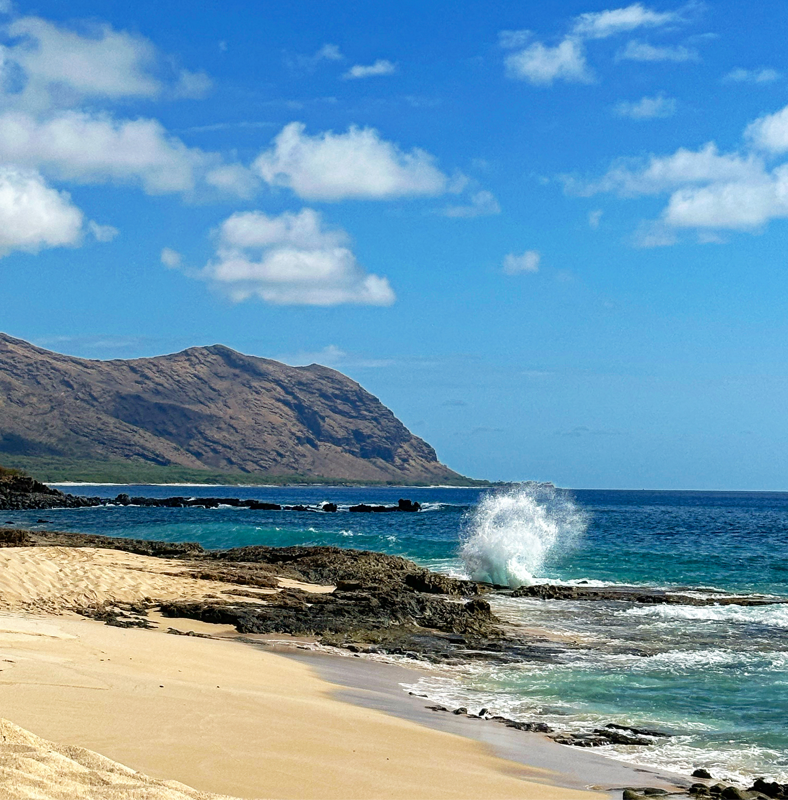
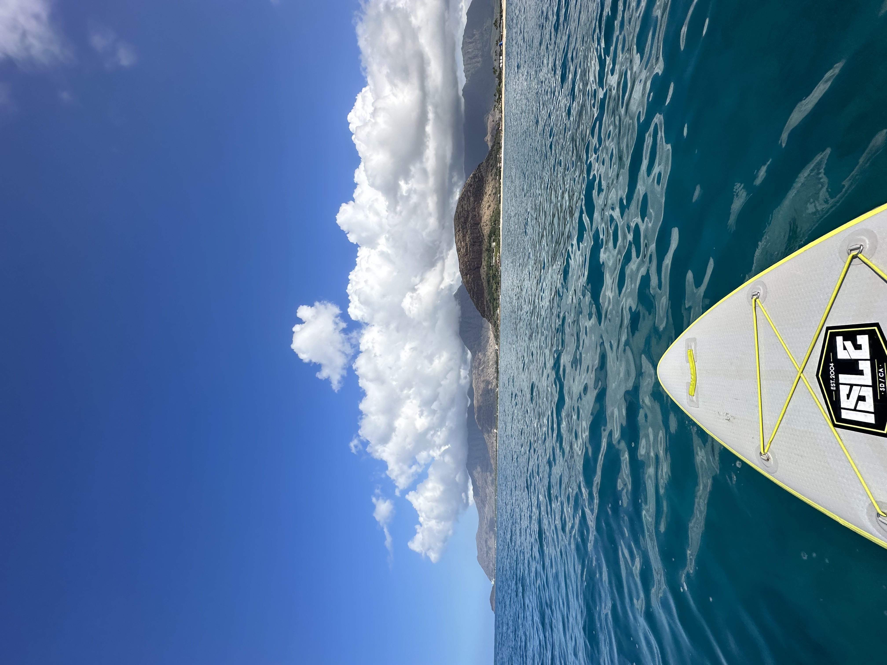
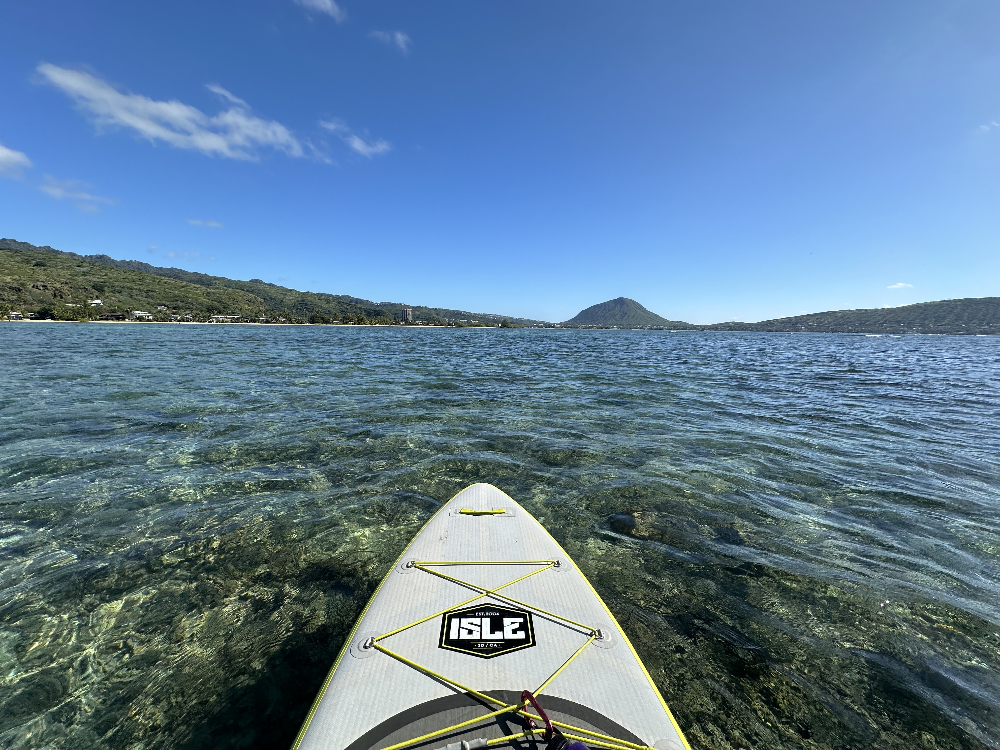
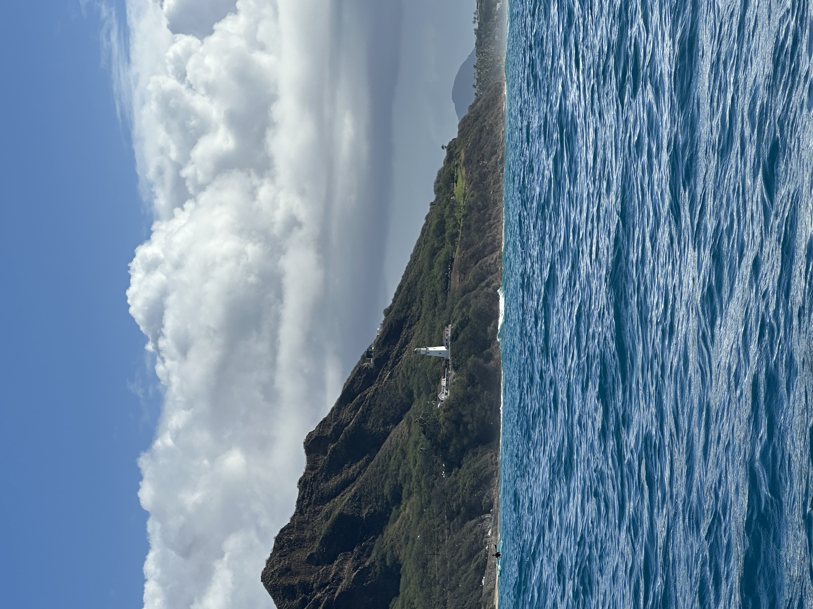
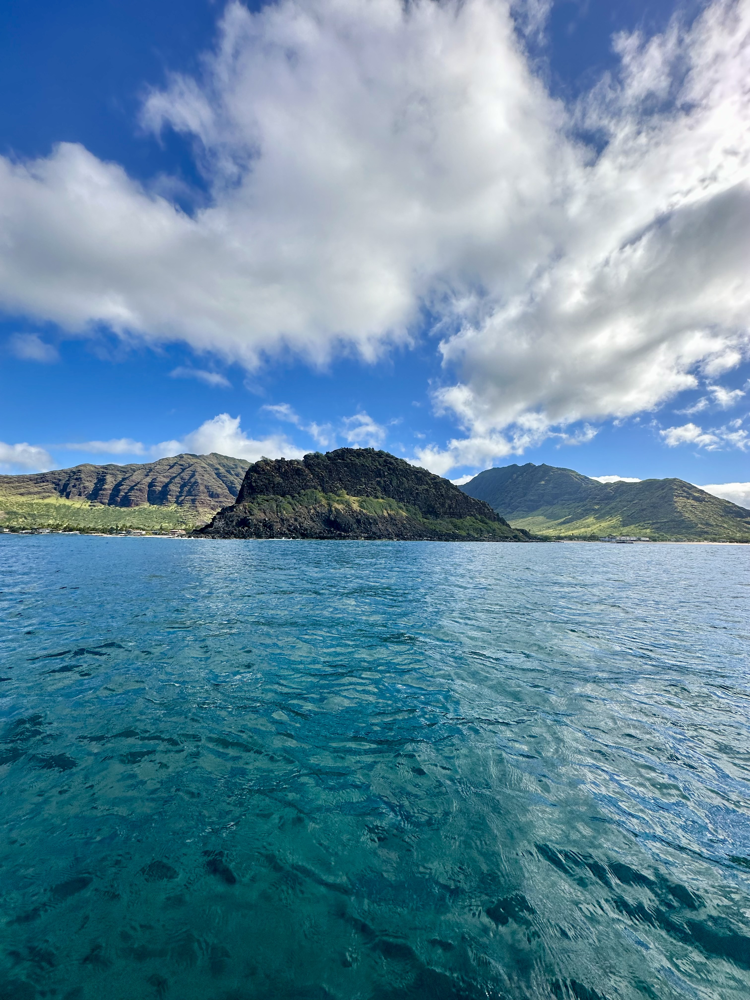
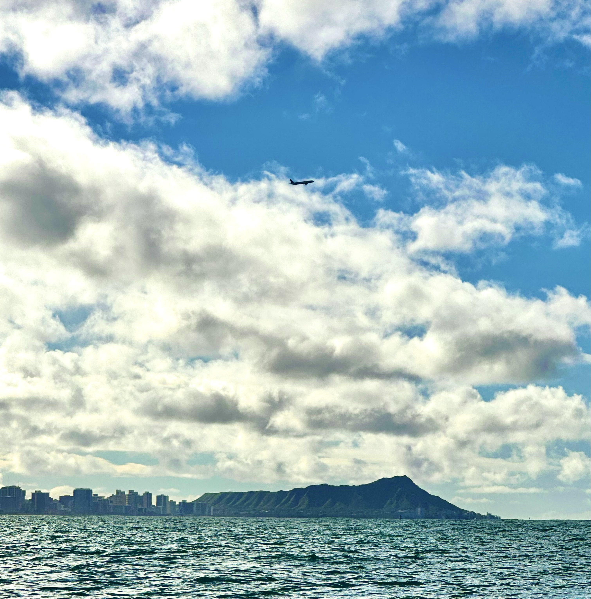
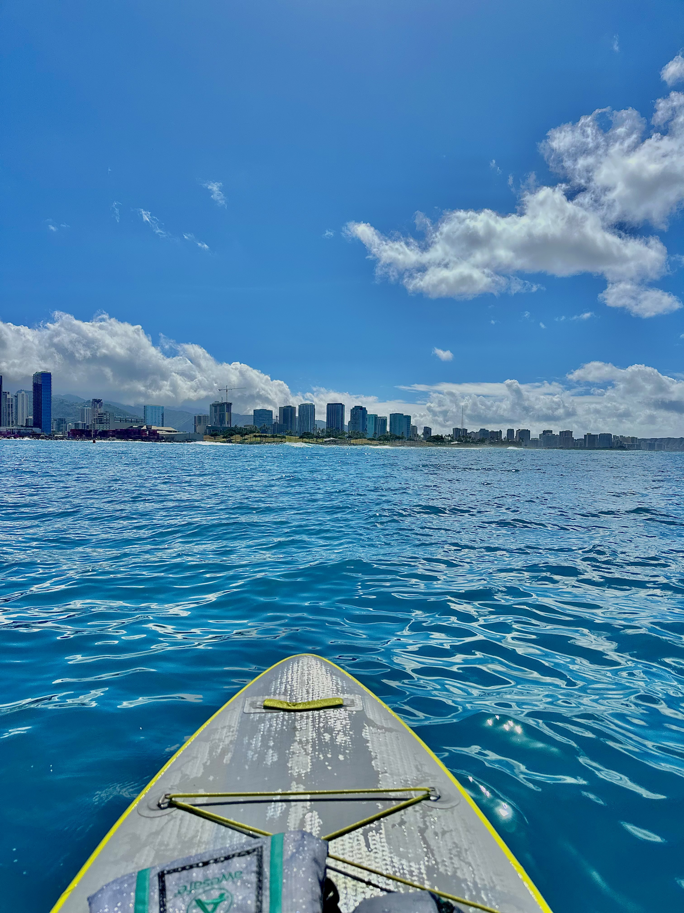
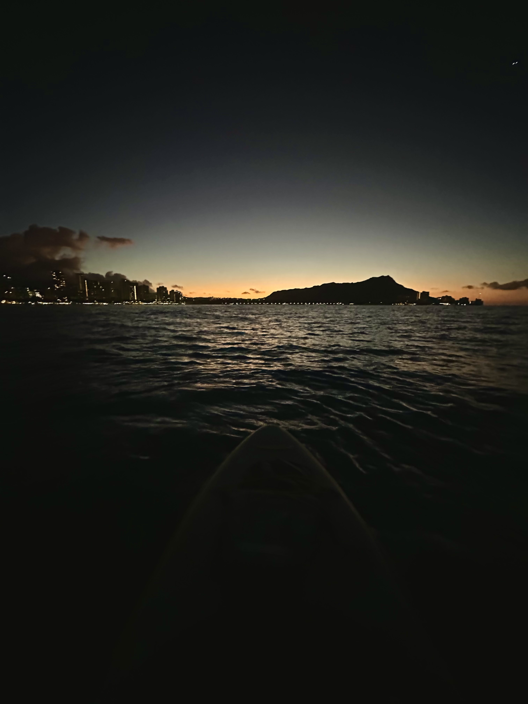
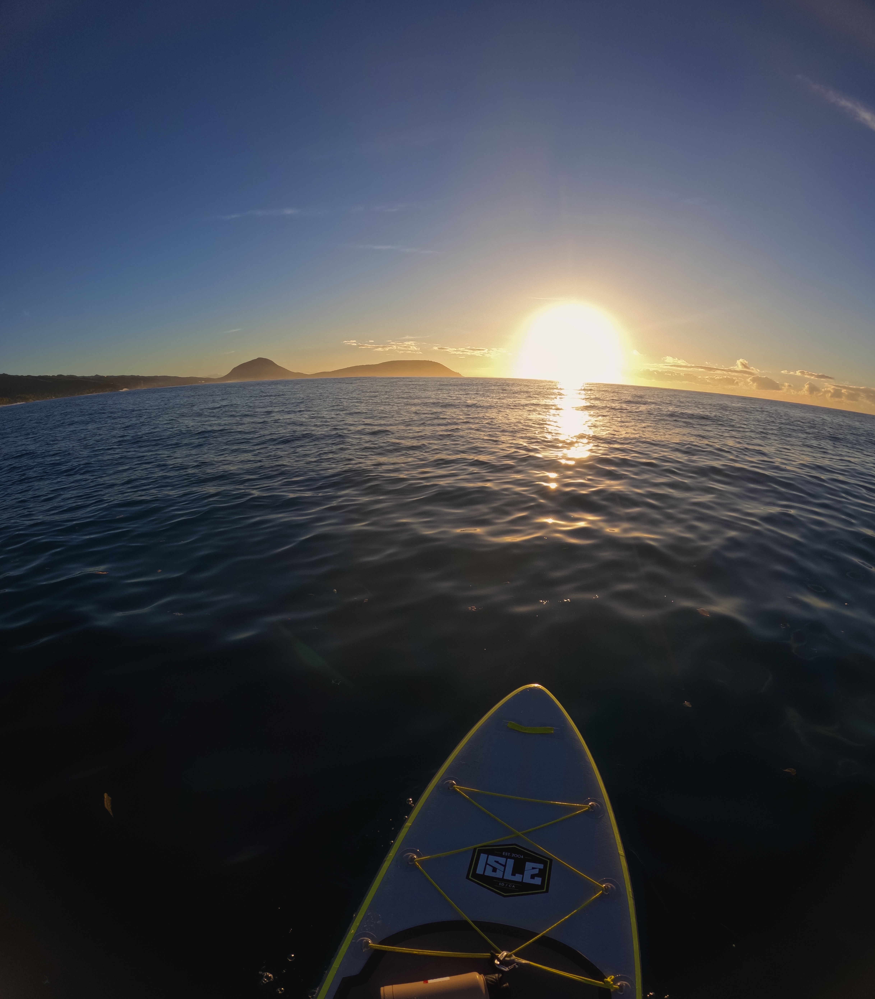
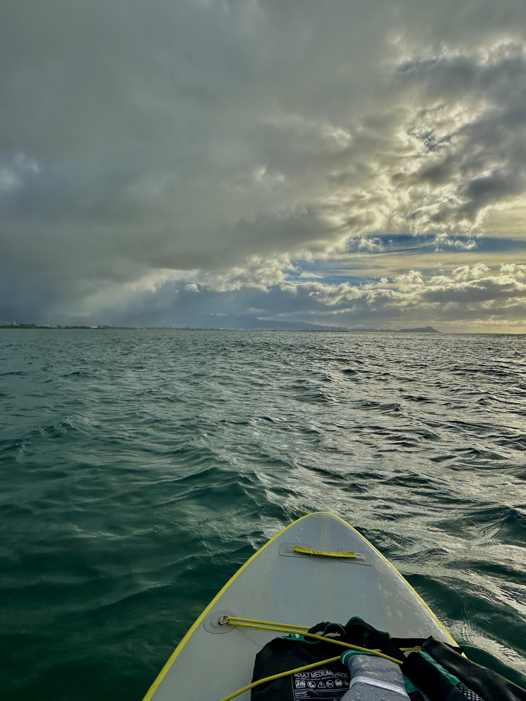

THE JOURNAL
The paddles
Every chapter of the journey around Oʻahu, from the beginning to the latest paddle. These links let you read the stories on Medium.

Intro
New Beginnings

Paddle 1
Genesis

Paddle 2
Charting Paths

Paddle 3
Respecting Limits

Paddle 4
Be Patient

Paddle 5
Pushing Boundaries

Paddle 6
Trust Yourself

Paddle 7
Worlds Collide

Paddle 8
Trust the Process

Paddle 9
A Year in Review

Paddle 10
Survive

Paddle 11
Take Pride

Paddle 12
Get in the Fight

Paddle 13
Brotherly Love

Paddle 14
No Longer Immortal